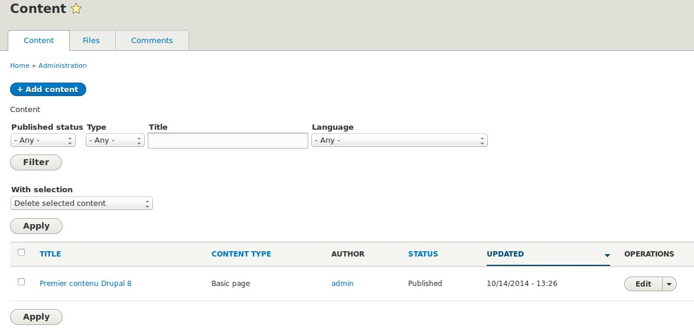

Drupal 8
Faut-il y aller ?
Drupal, c'est quoi ?
Un C.M.F.
Les nouvautés...
... pour les développeurs
Quand même quelques nouveautés pour les contributeurs
La gestion des blocs
Le formulaire de contribution

... et l'éditeur de texte riche !
La prévisualisation

Le "responsive design"

Views dans le core!

Edition "inline"
DEMO
Les changements pour les développeurs
"Il parait que c'est basé sur Symfony 2 ?"
Et donc, tout change...
...ou presque
Le cœur...
...basé sur Symfony
...en objet
...à base d'entités, de plugins et d'annotations
La couche de thème
Twig, un standard dans le monde PHP/Symfony
Plus de possibilités...
... et plus de sécurité
Les innovations majeures
Utilisable dès la sortie !
Un multilinguisme dans le cœur...
...meilleur que les versions précédentes AVEC la contrib
Des webservices REST dans le cœur
Des bonnes pratiques de performance web
Amélioration du balisage (accessiblité, référencement)
Diminution de l'utilisation du javascript en "front"
Et ça sort quand ?
Quand ce sera prêt...
...puis très régulièrement
(versions mineures avec évolutions)
Et pour les vieilles versions ?
Drupal 6 sera maintenu pendant 3 mois après la sortie de D8.
Le module de migration D6->D8 est déjà opérationnel.
Le module de migration D7->D8 est en cours de finalisation.
Et donc, faut-il y aller ?
Tout dépend de votre projet !
Un gros (et long) projet multilingue, métier, ...
OUI !
Un tout petit site sans de gros besoins
OUI !
(Ca se tente)
Entre les deux ?
C'est compliqué...
Demandez-nous ;-)
Ressources
Questions ?
@Nantes
Pierre Rineau (@pounard)
@Toulouse
Simon Georges (@simongeorges)